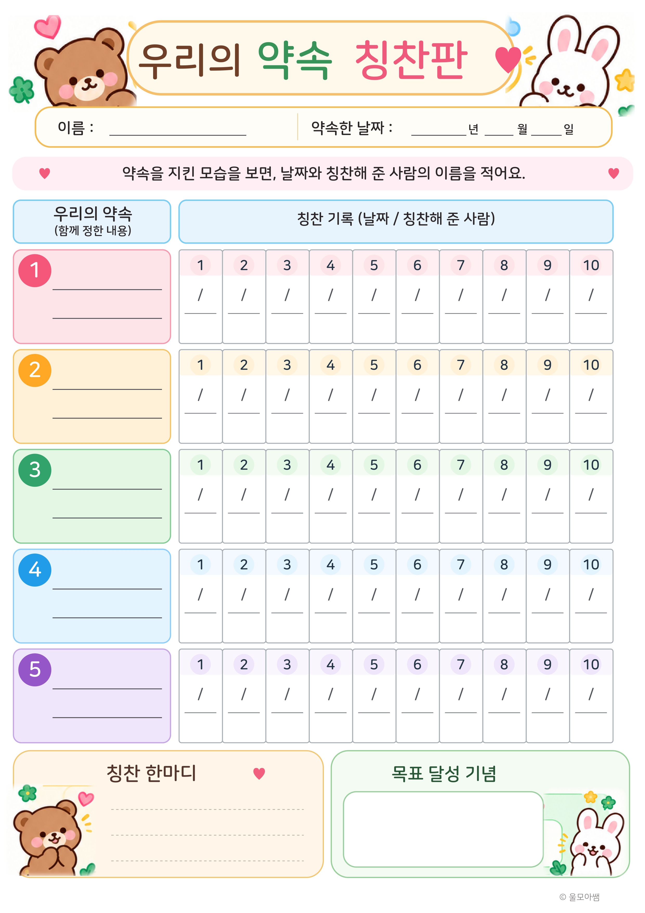

이렇게 기록해요
- 아이와 함께 실천할 수 있는 약속을 정해 왼쪽에 적어요.
- 약속을 잘 지킨 모습을 발견하면 해당 약속의 다음 빈칸에 날짜와 칭찬해 준 사람의 이름을 적어요.
- 도장이나 스티커는 필요하지 않아요. 처음에는 약속 한두 개부터 시작해도 괜찮아요.
이 자료는 아이를 평가하거나 서로 비교하기 위한 표가 아니라, 약속을 지킨 순간과 작은 실천을 발견해 기록하기 위한 자료예요. PDF는 A4 세로 한 장으로 출력할 수 있어요.